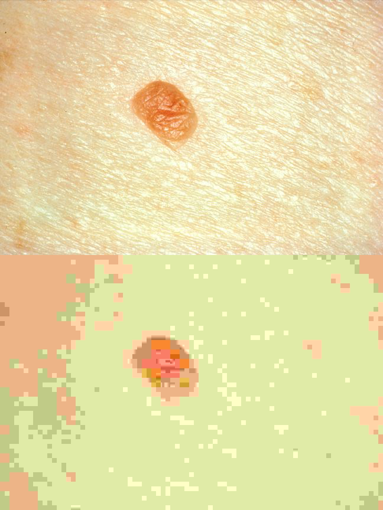

Arquitetura de SI e Estratégias de Armazenamento
TP8 · Registos Electrónicos de Saúde
![]()
2026-04-13
Introdução
Bem-vindos à TP8
Hoje trabalhamos dois temas complementares:
- Como se organizam os sistemas de informação em saúde — as suas camadas e a sua arquitectura
- Em que forma existem os dados — formatos, compressão, e o que isso implica para armazenamento e partilha
Estes temas são a base técnica que suporta tudo o que vimos até agora: interoperabilidade, uso secundário, e o que veremos a seguir — segurança e privacidade.
Materiais
Todos os materiais desta aula estão disponíveis em:
Agenda
- Revisão — tipos de dados e enquadramento legal
- Arquitectura de sistemas de informação
- Estratégias de armazenamento — bases de dados e cloud
- Formatos de ficheiros e compressão
- Formatos específicos de saúde
- Exercício prático
Revisão — Dados em saúde
Tipos de dados em saúde
Estruturados
Valores em campos bem definidos: resultados de análises, sinais vitais, prescrições, diagnósticos codificados (ICD-10, SNOMED CT).
Semi-estruturados
Com esquema flexível: mensagens HL7, recursos FHIR em JSON/XML, dados de dispositivos IoT.
Não estruturados
Sem esquema predefinido: notas clínicas em texto livre, imagens médicas, gravações de voz, vídeos cirúrgicos.
Enquadramento legal — uma recordação
Os dados de saúde têm estatuto especial em duas dimensões:
- Lei n.º 12/2005: os dados de saúde pertencem ao titular — não à instituição que os produz.
- Art. 9.º do RGPD: dados de saúde são dados pessoais de categoria especial — o seu tratamento requer base legal reforçada e medidas de segurança acrescidas.
Estas obrigações condicionam onde os dados podem estar, quem pode aceder, por quanto tempo, e como podem ser partilhados.
Note
O enquadramento legal é um requisito de arquitectura — não uma consideração posterior ao desenho técnico.
Arquitectura de sistemas de informação em saúde
O que é uma arquitectura de SI?
Uma arquitectura de sistema de informação é um plano que define como os dados, as aplicações, as tecnologias e as pessoas se articulam.
Não é um organigrama, nem um diagrama de rede. É uma linguagem comum que permite:
- perceber o que existe e como se relaciona
- tomar decisões de investimento e integração
- garantir que novos componentes se encaixam no conjunto
Camadas de arquitectura
Lado do cliente
- Camada de apresentação: interface gráfica — browser, app móvel, ecrã de posto clínico
Lado do servidor
- Camada de aplicação: lógica de negócio, regras clínicas, APIs
- Camada de acesso a dados: queries, mapeamento objeto-relacional
- Camada de dados: bases de dados, sistemas de ficheiros, PACS
┌─────────────────────┐
│ Apresentação │ ← browser / app
├─────────────────────┤ ─ ─ ─ ─ ─ ─ ─ ─ ─
│ Aplicação │ ← lógica clínica
├─────────────────────┤
│ Acesso a dados │ ← queries / APIs
├─────────────────────┤
│ Dados │ ← BD / ficheiros
└─────────────────────┘Exemplos no contexto do SNS
SClínico
Sistema clínico em centros de saúde e hospitais do SNS. Cobre as quatro camadas:
- Apresentação: interface web para médicos e enfermeiros
- Aplicação: gestão de episódios, prescrição, alertas clínicos
- Acesso a dados: integração com laboratório e imagiologia
- Dados: registos de utentes, episódios, prescrições
Plataforma de Dados da Saúde (PDS)
Camada de integração transversal ao SNS:
- Agrega dados de múltiplos sistemas hospitalares
- Expõe APIs para aplicações autorizadas (SNS 24, portal do utente)
- Implementa o Resumo de Saúde do Utente (RSU)
- Não substitui os sistemas hospitalares — complementa-os
Onde ficam os dados — estratégias de armazenamento
Bases de dados: três modelos
Relacional
Tabelas, linhas, colunas. Esquema rígido e predefinido. Adequado para dados estruturados com relações bem definidas.
Ex: prescrições, análises, faturação.
Documental
Documentos JSON ou XML, sem esquema fixo. Adequado para dados semi-estruturados ou com estrutura variável.
Ex: recursos FHIR, notas clínicas estruturadas.
Data lake
Armazenamento massivo de dados em bruto. Adequado para uso secundário e análise.
Ex: imagens DICOM, dados de wearables, texto clínico para treino de LLMs.
On-premise vs cloud
On-premise
Servidores físicos instalados no próprio hospital ou datacenter. A instituição controla o hardware, o software e a segurança.
- Tradição dominante nos hospitais portugueses
- Maior controlo directo, maior responsabilidade operacional
- Custos de capital elevados; actualização lenta
Cloud
Infraestrutura gerida por um fornecedor externo (AWS, Azure, Google Cloud). A instituição paga pelo uso.
- Escalabilidade e flexibilidade operacional
- Custos operacionais em vez de capital
- Questões de soberania, jurisdição e localização dos dados
No SNS, a maioria dos hospitais mantém infraestrutura on-premise, com experiências piloto em cloud para análise de dados secundária.
Soberania de dados e o EHDS
Soberania de dados: os dados estão sujeitos às leis do país onde foram recolhidos — independentemente de onde estão fisicamente armazenados.
O European Health Data Space (EHDS) propõe um enquadramento europeu:
- Uso primário: o utente e o clínico acedem aos dados de saúde em qualquer Estado-membro.
- Uso secundário: investigação e inovação — com governação reforçada e consentimento explícito.
- Infraestrutura federated: os dados não precisam de sair do país para serem analisados conjuntamente.
Tip
O EHDS articula directamente com o que viram na TP6 sobre uso secundário de dados de saúde.
Formatos de dados — porquê importa?
Da arquitectura ao ficheiro
Até agora falámos de como os sistemas se organizam e onde os dados ficam.
Mas os dados existem sob uma forma concreta: são ficheiros, com um formato específico, guardados em suportes específicos.
O formato de um ficheiro determina:
- que informação é preservada e o que é descartado na gravação
- quanta capacidade de armazenamento é necessária
- que ferramentas são necessárias para abrir e processar o conteúdo
- se o ficheiro pode ser transmitido de forma eficiente
Classificação por tipo
| Tipo | Formatos comuns | Uso típico em saúde |
|---|---|---|
| Texto | CSV, JSON, XML, TXT | Dados tabulares, recursos FHIR, configuração de sistemas |
| Documento | PDF, DOCX | Relatórios clínicos, notas de alta, consentimentos informados |
| Imagem | JPEG, PNG, SVG, DICOM | Fotografias clínicas, dermatoscopia, radiologia |
| Áudio | WAV, MP3, AAC, FLAC | Ausculta cardíaca, gravações de teleconsulta |
| Vídeo | MP4, AVI, WEBM | Cirurgia, endoscopia, videoconsulta |
Formatos: texto, documento e imagem
| Formato | Compressão | Perda de qualidade | Uso típico |
|---|---|---|---|
| CSV / TXT | Nenhuma | — | Dados tabulares, logs clínicos |
| JSON / XML | Nenhuma | — | APIs, interoperabilidade |
| Lossless | Não | Documentos formatados | |
| JPEG | Lossy | Sim | Fotografia, imagem clínica geral |
| PNG | Lossless | Não | Capturas de ecrã, imagens com transparência |
| DICOM | Lossless (típico) | Não | Imagem médica (radiologia, TC, RM) |
Formatos: áudio e vídeo
| Formato | Compressão | Perda de qualidade | Uso típico |
|---|---|---|---|
| WAV | Nenhuma | — | Áudio de alta fidelidade |
| MP3 / AAC | Lossy | Sim | Áudio para distribuição e arquivo |
| FLAC | Lossless | Não | Arquivo de áudio de qualidade clínica |
| MP4 / WEBM | Lossy (típico) | Sim | Vídeo para distribuição e teleconsulta |
| AVI | Variável | Variável | Vídeo, edição cirúrgica |
Compressão
Sem perdas vs com perdas
Lossless (sem perdas)
O ficheiro descomprimido é bit a bit idêntico ao original. Nenhuma informação é descartada.
Usado quando a fidelidade é crítica: texto, código, imagens médicas, arquivos legais.
Exemplos: PNG, FLAC, DICOM em modo lossless, ZIP, 7z.
Lossy (com perdas)
O algoritmo descarta informação que considera perceptualmente irrelevante. O ficheiro descomprimido é uma aproximação do original.
Usado quando o tamanho é prioritário e a perda é aceitável para o uso previsto.
Exemplos: JPEG, MP3, AAC, MP4 com H.264 ou H.265.
Warning
Compressão com perdas em imagens de diagnóstico é geralmente inaceitável — pode comprometer a leitura de achados subtis.
O efeito da qualidade JPEG
A compressão JPEG usa um parâmetro de qualidade (0–100) que controla o equilíbrio entre tamanho e fidelidade:
- Q = 100: maior fidelidade, maior tamanho
- Q = 80: diferenças imperceptíveis; tamanho ~6× menor
- Q = 50: artefactos de bloco visíveis em bordos
- Q = 20: degradação severa; tamanho ~30× menor
Para uso clínico de diagnóstico, Q abaixo de 95 é geralmente desaconselhado.

Formatos de arquivo comprimido
Para transferir ou arquivar conjuntos de ficheiros, usam-se formatos de arquivo:
| Formato | Algoritmo | Notas |
|---|---|---|
| ZIP | Deflate (lossless) | Universal; suportado nativamente em Windows, macOS e Linux |
| RAR | Proprietário (lossless) | Compressão ligeiramente melhor; requer software específico |
| 7z | LZMA (lossless) | Melhor taxa de compressão disponível; open source |
| tar.gz | gzip (lossless) | Padrão em sistemas Unix/Linux; tar agrega, gzip comprime |
No exercício prático de hoje, o objectivo é produzir o menor ficheiro .zip possível.
Formatos específicos de saúde
DICOM — o formato da imagem médica
DICOM (Digital Imaging and Communications in Medicine) é o formato padrão para imagens médicas desde 1993.
- Não é apenas uma imagem: cada ficheiro DICOM contém a imagem e um conjunto extenso de metadados clínicos estruturados.
- Os metadados incluem: identificação do utente, data e hora do estudo, modalidade de aquisição (TC, RM, RX, ecografia, PET), equipamento e parâmetros de aquisição.
- Os sistemas PACS (Picture Archiving and Communication Systems) organizam, arquivam e distribuem ficheiros DICOM dentro e entre instituições.
Note
Na TP5 falámos de interoperabilidade — o DICOM é um dos pilares dessa interoperabilidade em imagiologia, a par de perfis IHE (Integrating the Healthcare Enterprise).
Metadados e privacidade
Um ficheiro digital raramente é apenas o seu conteúdo visível — contém também metadados incorporados na própria estrutura.
JPEG com metadados EXIF
Uma fotografia tirada com telemóvel pode conter:
- Data e hora exactas
- Coordenadas GPS (geolocalização)
- Fabricante e modelo do dispositivo
- Definições da câmara (ISO, abertura, exposição)
Uma fotografia de uma lesão cutânea partilhada sem remover os EXIF pode revelar a localização exacta do doente.
DICOM com metadados clínicos
Um ficheiro DICOM contém nos seus headers:
- Nome, data de nascimento, número de utente
- Identificador do estudo e da série
- Nome do médico requisitante
- Instituição onde o exame foi realizado
Warning
A partilha de ficheiros DICOM sem anonimização prévia constitui uma violação do RGPD.
Exercício prático
Exercício — objectivo
Criar o menor ficheiro .zip possível a partir de uma pasta com vários ficheiros.
Ficheiros fornecidos
- Imagem:
1.jpg(JPEG, 1.3 MB) e4.tiff(TIFF, 29 MB) - Áudio:
2.wav(WAV, 1.5 MB),3.mp3(MP3, 2.3 MB) e5.flac(FLAC, 92 MB) - Texto:
6.txt(TXT, 1.2 MB) - Documento:
7.pdf(PDF, 826 KB)
Logística
- Trabalho em pares
- Entrega no Moodle da UC
- Download dos ficheiros: pasta ficheiros/ no GitHub (botão direito → “Save link as…” em cada ficheiro)
Exercício — regras
É permitido
- Alterar o formato dos ficheiros (converter entre formatos equivalentes)
- Ajustar parâmetros de compressão, desde que não se perca conteúdo perceptível
- Usar ferramentas de conversão online ou instaladas localmente
Não é permitido
- Remover ficheiros da pasta
- Cortar, fazer crop, ou alterar o conteúdo visível ou audível
- Mudar a extensão sem realizar a conversão efectiva
- Reduzir a resolução abaixo de 720p em vídeo ou 72 dpi em imagens
Exercício — ferramentas
123apps.com/pt/ — conversor online de áudio, vídeo e imagem; não requer instalação.
Podem usar outras ferramentas, desde que respeitem as regras acima.
Exercício — entregável
Um único ficheiro .zip com:
- Todos os ficheiros convertidos (nomes originais mantidos; extensão pode mudar)
- Um ficheiro
registo.txt
Estrutura do registo.txt — para cada ficheiro:
| Campo | Exemplo |
|---|---|
| Nome do ficheiro original | audio.wav |
| Tamanho original | 4 200 KB |
| Conversão aplicada | WAV → MP3 |
| Tamanho após conversão | 350 KB |
| Rácio de compressão | 0.08 |
No final: tamanho do ZIP final, soma dos tamanhos originais, e rácio global.
Exercício — reflexões
Perguntas de reflexão (3 a 5 frases, incluir no registo.txt):
Qual o tipo de ficheiro que mais contribuiu para a redução de tamanho? Porquê? Se tivesse de escolher um formato de arquivo para arquivar estes dados a longo prazo, qual escolheria? Justifique a sua escolha. Que implicações clínicas ou legais poderiam surgir se os ficheiros fossem partilhados sem a conversão adequada?
Questões e próxima aula
Na TP9: segurança, privacidade e ética em RES — os fundamentos legais e técnicos para proteger os dados que hoje aprendemos a armazenar e a gerir.
Contacto e materiais:
- Dúvidas sobre o exercício: endereço de e-mail da UC
- Todos os materiais: saudinob.github.io/res2526-tp8
RES 25/26 · SauD InoB · FMUP